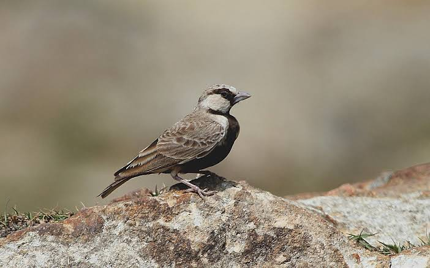

Ashy Crowned Sparrow Lark
Birds
The ashy-crowned sparrow-lark is a small sparrow-sized member of the lark family. It is found in the plains in open land with bare ground, grass and scrub across South Asia. The males are well marked with a contrasting black-and-white face pattern, while females are sandy brown, looking similar to a female sparrow.
Scientific name: Eremopterix griseus
Conservation status: Least Concern (Population stable)
Phylum: Chordata
Higher classification: Eremopterix
Order: Passerine
Rank: Species
The ashy-crowned sparrow-lark (Eremopterix griseus) is a small sparrow-sized member of the lark family. It is found in the plains in open land with bare ground, grass and scrub across South Asia.
The males are well marked with a contrasting black-and-white face pattern, while females are sandy brown, looking similar to a female sparrow.
Males are easily detected during the breeding season by the long descending whistle that accompanies their undulating and dive-bombing flight displays.
Sparrow sized with a finch-like bill and short legs, these birds are usually seen sitting on the ground, and although they will sometimes perch on wires they do not perch in trees or bushes.
The male is sandy brown overall with a black belly, chin, lower lores and eye stripe. The top of the head is ashy (although the base of these crown feathers are dark) unlike the dark brown to black in the black-crowned sparrow-lark which partly overlaps
with the range of this species in the arid zone of India and Pakistan. The female is pale brown and very similar to a female house sparrow, although the legs are much shorter and appearing stockier and shorter-necked.
Biology of Ashy Crowned Sparrow Lark
Habitat and distribution
This species is restricted to below 1000 metres elevation and is found from south of the Himalayas to Sri Lanka extending to the Indus river system in the west and to Assam in the east.
It is found in stubble, scrub, waste land, riverside sand and tidal flats on the coast. They avoid the interior of the desert zone, a habitat that is more likely to be used by the black-crowned sparrow-lark.
The two species overlap partly in range, although they are rarely seen together in the same locations. During the monsoon season, they withdraw from heavy rainfall regions.
Behaviour and ecology
These larks are found in pairs or small groups and form larger flocks in winter. They forage on the ground for seeds and insects. When disturbed they will sometimes crouch and take to flight. They will take fallen grain in fields.
They roost at night on the ground, making small depressions in the soil.
The breeding is irregular and spread out although they breed before the rains mainly during February to September in southern India and May to June in Sri Lanka.
The display of the male consists of a song flight that involves soaring up with some chirruping calls and then diving with partly closed wings and then rising up in a glide.
This undulating flight is accompanied by a long low whistle at each dive and at the tip of each rise by a sharp chilp note. The display ends with the male descending at an angle and landing on a small mound or clod before repeating the performance after a few minutes.
The nest is a compact depression under a tuft of grass in the ground lined with grass and hair with some pebbles arranged on the edge.
The usual clutch is two or three eggs and both males and female incubate the eggs. The eggs hatch after about 13 or 14 days and both parents take turns to feed the young although the female is more active.